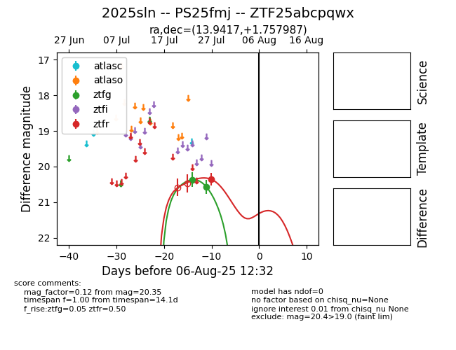

Target 2025sln at 2025-08-06 10:42, see:
FINK: fink-portal.org/2025sln
Lasair: lasair-ztf.lsst.ac.uk/objects/2025sln
ALeRCE: alerce.online/object/2025sln
TNS: wis-tns.org/object/2025sln
YSE: ziggy.ucolick.org/yse/transient_detail/2025sln
alt names
ZTF25abcpqwx (ztf,fink)
2025sln (tns,yse)
PS25fmj (panstarrs)
coordinates:
equatorial (ra, dec) = (13.9417,+1.75799)
galactic (l, b) = (125.1703,-61.09494)
photometry
last ztfg=20.57, ztfr=20.35
2 ztfg, 1 ztfr detections
